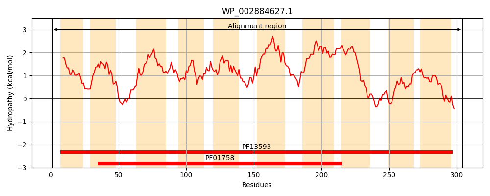
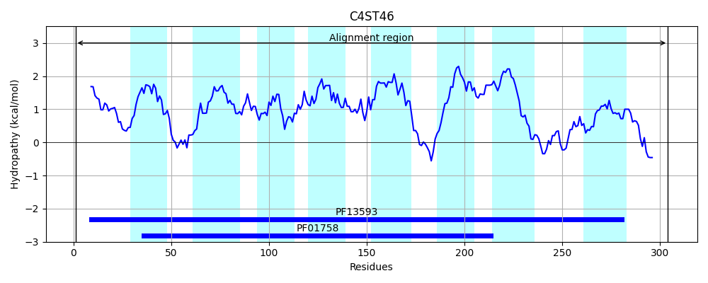
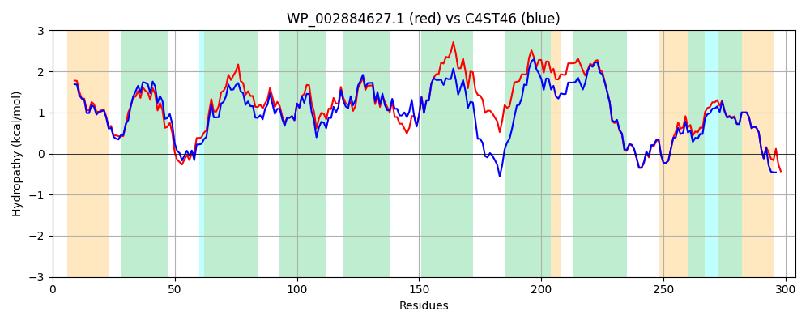

Hit Accession: C4ST46
Hit TCID: 2.A.28.2.9
Hit Description: gnl|BL_ORD_ID|2526 gnl|TC-DB|C4ST46|2.A.28.2.9 Sodium Bile acid symporter family protein OS=Yersinia frederiksenii ATCC 33641 GN=DJ58_231 PE=1 SV=1
Mach Len: 304
e:0.000000
Query TMS Count : 10
Hit TMS Count: 8
TMS-Overlap Score: 8.350000
Predicted Substrates:CHEBI:9175;sodium(1+), CHEBI:3098;bile acid
BLAST Alignment:
Score: 1283 , Bit scores: 498 bits, E-value: 4.4e-180, Alignment length: 304, Percentage identity: 83
Query: 1 MLATLTRLFPLWALLLSVLAYYTPTTFTPIGPWVTTLLMLIMFGMGVHLKLEDFKRVLSRPAPVAAGIFLHYLVMPLAAWLLALLFHMPPELSAGMVLVGSVASGTASNVMIFLAKGDVALSVTISSVSTLVGVVATPLLTRLYVDAHIQVDVMGMLLSILQIVVIPIALGLIVHHLLPKVVKAVEPFLPAFSMVCILAIISAVVAGSAAHIASVGLVVIIAVILHNTIGLLGGYWGGRLFGFDESTCRTLAIEVGMQNSGLAAALGKIYFGPLAALPGALFSVWHNLSGSLLAGYWSGKPIAK 304
ML +TRLFP+WALLLSV AY+ PTTFT IGP+V LLMLIMF MGV L+L+DFKRVLSRPAPVAA FLHYL+MPL AW+LA+LF MPP+LSAGMVLVGSVASGTASNVMI+LAKGDVALSVTIS+VSTLVGV ATPLLTRLYVDA I VDV+GML SILQIVVIPI GL++HH K VK +EP+LPA SMVCILAIISAVVAGS +HIASVG VVIIAVILHN IGLL GYWGG+LFGFDESTCRTLAIEVGMQNSGLAA LGKIYF PLAALPGALFSVWHNLSGSLLAGYWSGKP+ K
Sbjct: 1 MLVKITRLFPVWALLLSVAAYFRPTTFTGIGPYVGPLLMLIMFAMGVTLRLDDFKRVLSRPAPVAAATFLHYLIMPLTAWILAMLFRMPPDLSAGMVLVGSVASGTASNVMIYLAKGDVALSVTISAVSTLVGVFATPLLTRLYVDATISVDVVGMLKSILQIVVIPITAGLVIHHTFTKTVKRIEPYLPAMSMVCILAIISAVVAGSQSHIASVGFVVIIAVILHNGIGLLSGYWGGKLFGFDESTCRTLAIEVGMQNSGLAATLGKIYFSPLAALPGALFSVWHNLSGSLLAGYWSGKPVKK 304 | Protein Hydropathy Plots: |
|---|
|  |  |
Pairwise Alignment-Hydropathy Plot:
|
|---|
|  |